Le Mat
Il Matto
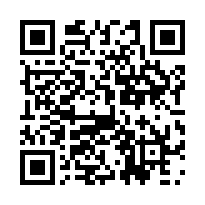
Quale passo continui a rimandare?
Attiva la Traccia mattoPagina tecnica per controllare e stampare i QR delle 22 Tracce Urbane. Ogni codice apre lo stesso motore: traccia.html, con un Arcano diverso.

Quale passo continui a rimandare?
Attiva la Traccia matto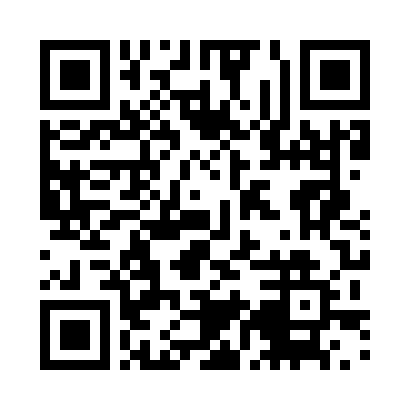
Cosa puoi iniziare con ciò che hai già?
Attiva la Traccia bagatto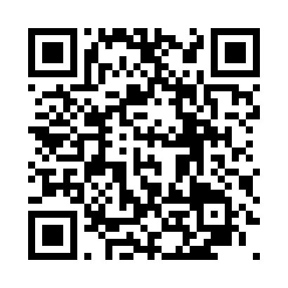
Che cosa sai già, ma non stai ascoltando?
Attiva la Traccia papessa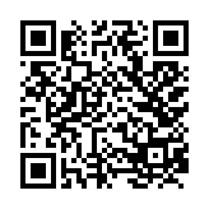
Quale idea chiede di diventare reale?
Attiva la Traccia imperatrice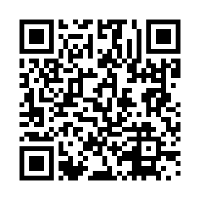
Dove serve una decisione più chiara?
Attiva la Traccia imperatore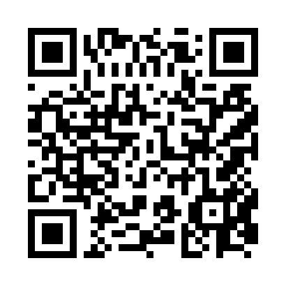
Quale consiglio sei pronto a ricevere davvero?
Attiva la Traccia papa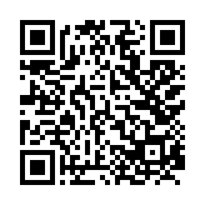
C’è una scelta che continui a rimandare?
Attiva la Traccia amoureux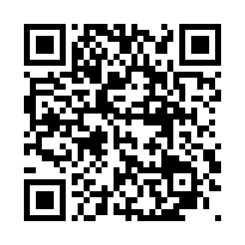
Dove stai andando con tutta questa energia?
Attiva la Traccia carro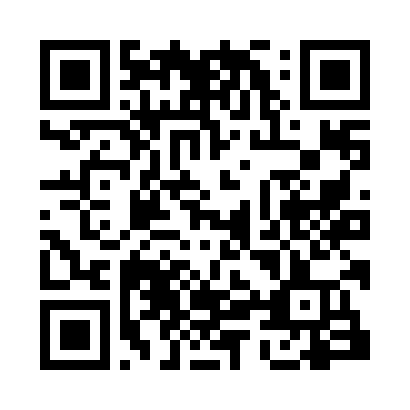
Che cosa chiede di essere rimesso al suo posto?
Attiva la Traccia giustizia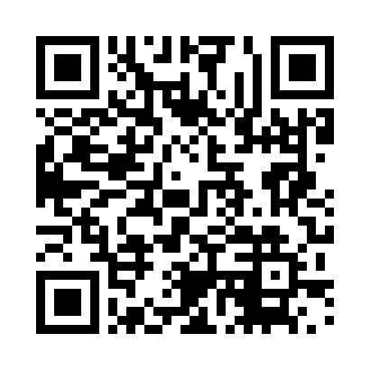
Cosa puoi vedere solo rallentando?
Attiva la Traccia eremita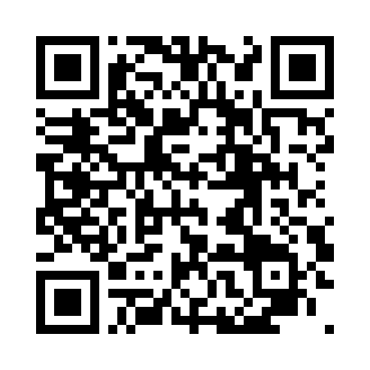
Quale schema si sta ripetendo?
Attiva la Traccia ruota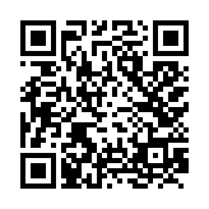
Quale forza stai trattenendo?
Attiva la Traccia forza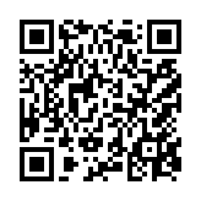
Cosa cambia se guardi tutto da un altro punto?
Attiva la Traccia appeso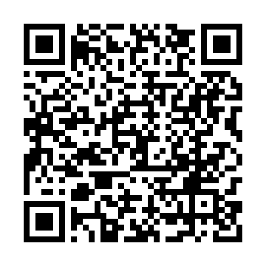
Che cosa ha finito il suo compito?
Attiva la Traccia arcano-senza-nome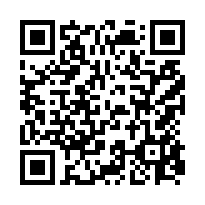
Che cosa va versato con più misura?
Attiva la Traccia temperanza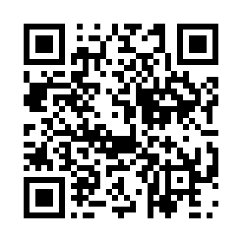
A che cosa stai dando troppo potere?
Attiva la Traccia diavolo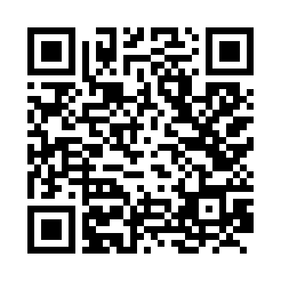
Che cosa si sta aprendo mentre qualcosa cede?
Attiva la Traccia torre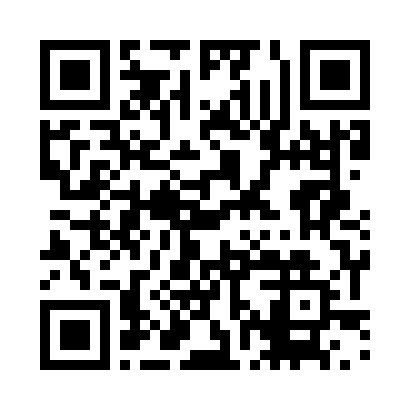
Dove puoi tornare semplice?
Attiva la Traccia stella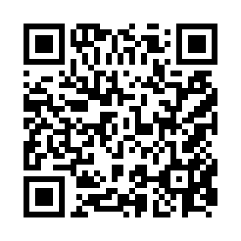
Quale paura sta prendendo forma?
Attiva la Traccia luna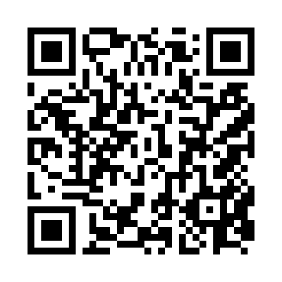
Che cosa diventa semplice alla luce?
Attiva la Traccia sole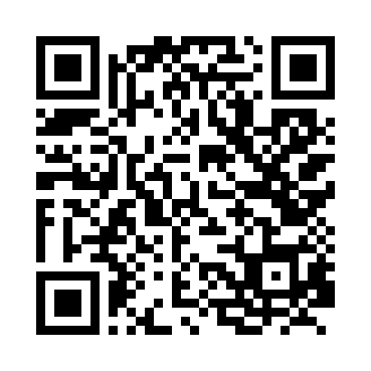
Quale parte di te sta chiedendo ascolto?
Attiva la Traccia giudizio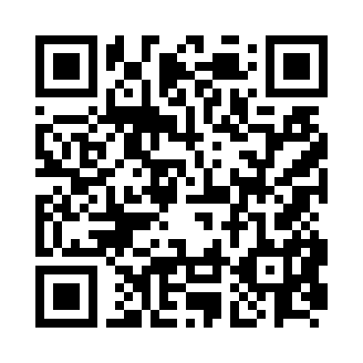
Che cosa sei pronto a integrare?
Attiva la Traccia mondo